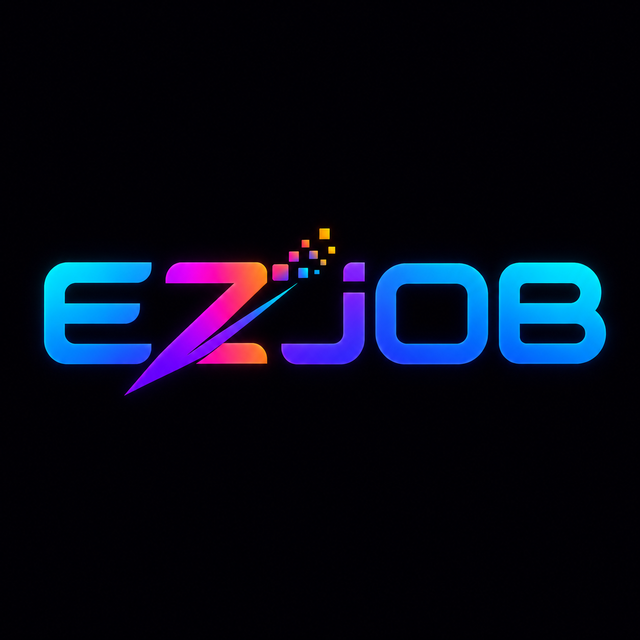
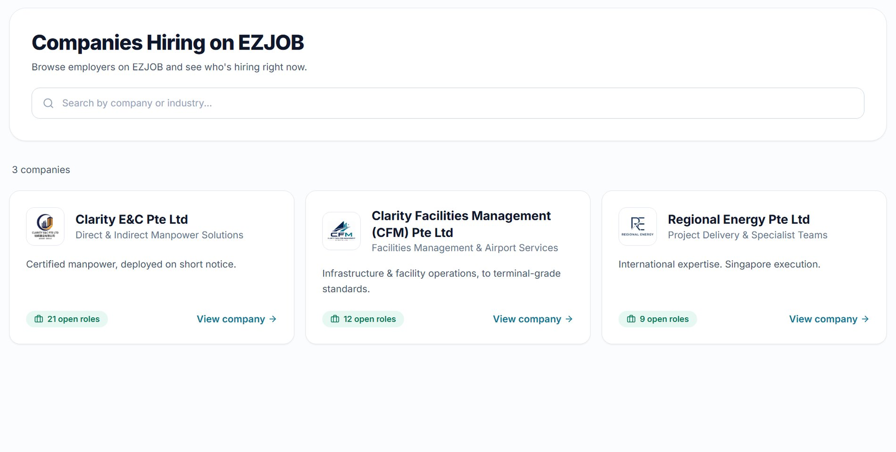

Skilled trades hiring, matched on proven skill.
EZJOB is a recruitment and skill verification platform for construction, electrical and heavy industry. Workers show what they can do; employers get ranked candidates.
EZJOB is in preview and opens on a test address.
Show the work. Not the CV.
Search by trade, pay and country
Workers filter live roles by role, salary, country and benefits, in a list or a swipe view.
42 jobs listed on 11 November 2026Every job names its skills
Each listing shows the employer, the openings left and the trade skills it needs, so the match is on skills and not on keywords.
See who is hiring
Employers have their own pages with open roles, so a worker can check the company before applying.
3 companies hiring on 11 November 2026


Use EZJOB here.
The live job board loads into this page. Search the open roles, open a company, or start a Skill Passport.
What EZJOB is, and the problem it is for
Hiring a welder, a pipefitter or a high-voltage technician is not like hiring for a desk job. A CV says very little about whether someone can do the work, and a keyword search cannot tell a certified TIG welder from someone who once held a torch. Employers fall back on agencies and personal referrals, and workers fall back on whoever promises them a job.
EZJOB is built for that gap. Each worker builds a Digital Skill Passport: a verified digital identity that holds their credentials and a video of them demonstrating their trade. Employers post roles and receive candidates ranked on those trade skills.
It is free for workers and built for roles that cross borders, across Singapore, Malaysia and the wider region. EZJOB is in preview today.
What it does, function by function
- Digital Skill PassportA portable, verified record
- One profile holds the worker's identity, authenticated certification records and trade credentials. It can be exported as a standardised, print-ready PDF portfolio, so the record is useful outside the platform too.
- Video skill demonstrationShow the work, not the CV
- Workers upload a video of themselves doing the job. Automated skill and credential validation checks it, and employers can view worker video portfolios directly.
- Skill-based matchingRanked on trade skills
- Employers receive ranked candidate recommendations based on actual trade skills, in real time, instead of a list of everyone whose CV contains the right word.
- AI Job StudioA job specification in seconds
- An employer enters a skilled trade title and the studio generates a complete, structured job specification to edit and post.
- Integrity Bond SystemA transparent hiring model
- The hiring model is designed to remove the incentive for bribery and exploitation in placement, which is a known problem in cross-border blue-collar hiring.
- Pricing modelFree for workers
- The platform is free for workers and priced to be affordable for employers, so a worker does not pay to be considered for a job.
- Cross-border rolesSingapore, Malaysia and the region
- The platform is built for regional deployment across Singapore, Malaysia and APAC hubs.
Who it is for. Employers hiring industrial, engineering and certified technical specialists, and skilled workers who want their ability, not their paperwork, to be what gets them hired.
How it compares with the usual alternatives
| Criterion | EZJOB | General job portals | Recruitment and manpower agencies | Referrals and informal agents |
|---|---|---|---|---|
| How skill is shown | A video of the worker doing the job, plus credential records in one passport | A CV or PDF upload, self-declared | The agency's own screening; quality varies by agency | Someone vouches for them |
| How candidates are found | Ranked on trade skills | Keyword search | A recruiter's judgement and contacts | Whoever is available |
| Cost to the worker | Free | Usually free | Placement fees are sometimes charged to the worker | Informal fees and favours are a risk |
| Writing the job post | Drafted by AI from a trade title, then edited | Written by hand | Written by the agency | No written specification |
| Transparency of the process | Designed around a transparent hiring model | Open listings, little verification | Depends on the agency | Low |
| Size of the talent pool today | Smaller: the platform is in preview | Very large | Limited to the agency's network | Limited to personal networks |
| Hands-on help with deployment | A platform, not a service desk | None | Often handles paperwork and logistics for you | None |
The comparison is against the typical setup in each category, not a named product. Individual products and agencies differ, so check the ones you are considering.
Where EZJOB is stronger
- Skill is shown, not claimed. A video demonstration and verified credentials tell an employer far more than a CV does.
- Built for trades. Matching, job templates and passports are designed around trade skills, not adapted from office recruitment.
- Workers do not pay. Being free for workers removes one of the main routes to exploitation in this kind of hiring.
- Faster job posts. The AI Job Studio turns a trade title into a full specification to edit, which helps employers who rarely write them.
- The record is portable. A worker can export their passport as a PDF and use it anywhere.